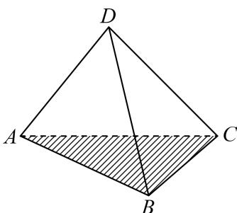
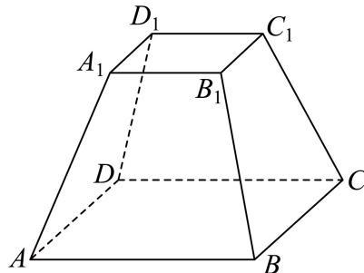

填空题
按本区原卷题号顺序排列。
徐汇 · 第1题 ★☆☆☆☆ · 教师预估
本题资料或解析有待核事项，预览不可作为已审定成品。
已知全集 U={x∣∣x−1∣≤2,x∈R} ，A = [1, 3]，则A =
徐汇 · 第2题 ★☆☆☆☆ · 教师预估
复数 z=1−i1 （其中 i为虚数单位）的虚部是
徐汇 · 第3题 ★☆☆☆☆ · 教师预估
本题资料或解析有待核事项，预览不可作为已审定成品。
在空间直角坐标系中，向 Ξa=(−m,6,3),b=(2,n,1) ,若 a//b ，则 ∣m+n=
徐汇 · 第4题 ★☆☆☆☆ · 教师预估
已知幂函数y = f(x)的图像过点 (3,33) ，则该幂函数的值域是
徐汇 · 第5题 ★☆☆☆☆ · 教师预估
本题资料或解析有待核事项，预览不可作为已审定成品。
如下是一个 2×2 列联表，则 s= ______。
|
y1 |
y2 |
总计 |
| x1 |
a |
35 |
45 |
| x2 |
7 |
b |
n |
| 总计 |
m |
73 |
s |
徐汇 · 第6题 ★★☆☆☆ · 教师预估
已知 cosθ=−53,θ∈(0,π) ，则 tan(θ−4π) 的值为
徐汇 · 第7题 ★★☆☆☆ · 教师预估
已知PA⊥平面ABC， △ABC 是直角三角形，且 AB=AC=2 ，PA = 4，则点P到直线BC的距离是
徐汇 · 第8题 ★★☆☆☆ · 教师预估
本题资料或解析有待核事项，预览不可作为已审定成品。
已知ABCD是正方形，点M是AB的中点，点E在对角线AC上，且 AE⟶=3EC⟶ ,则∠MED的大小为
徐汇 · 第9题 ★★☆☆☆ · 教师预估
已知两个随机事件A,B，若 P(A)=51,P(B)=41,P(B∣A)=32 ，则 P(A∣B)
徐汇 · 第10题 ★★★☆☆ · 教师预估
已知双曲线 a2x2−b2y2=1(a>0,b>0) 的左焦点为 F1 ，右焦点为 F2 .若双曲线的右支上存在一点P，使得直线 PF1 与以双曲线的实轴为直径的圆相切，切点为线段 PF1 的中点，则该双曲线的离心率为
徐汇 · 第11题 ★★★★☆ · 教师预估
本题资料或解析有待核事项，预览不可作为已审定成品。
如图，某处有一块圆心角为 32π♯ 的扇形绿地AOB，扇形的半径为20米，AB是一条原有的人行直路，由于工程建设需要，现要在绿地中建一条直路 ，以便在图中阴影部分区域分类堆放物料.为了尽量减少对绿地的破坏（不计路宽），则原直路AB与新直路OC的交叉点D到O的距离为米.

徐汇 · 第12题 ★★★★☆ · 教师预估
设实数 [ω>0, ，若 f(x)=sinωx 满足对任意 x1∈[0,π] ，都存在 x2∈[π,2π] ，使得 f(x1)+f(x2)=0 成立，则ω的最小值是
选择题
按本区原卷题号顺序排列。
徐汇 · 第13题 ★☆☆☆☆ · 教师预估
已知A､B为两个随机事件，则“A､B为互斥事件”是“A､B为对立事件”的（ ）
A. 充分非必要条件
B. 必要非充分条件
C. 充要条件
D. 非充分非必要条件
徐汇 · 第14题 ★★☆☆☆ · 教师预估
本题资料或解析有待核事项，预览不可作为已审定成品。
在研究线性回归模型时，若样本数据 (xi,yi)(i=1,2,3,⋅⋅⋅,n) 所对应的点都在直线 y=−31x+2 上，则两组数据x 和 ∣yi(i=1,2,3,⋯,n) 的线性相关系数为（ ）
A. −1
B. 1
C. −31
D. 2
徐汇 · 第15题 ★★★☆☆ · 教师预估
本题资料或解析有待核事项，预览不可作为已审定成品。
在桌面上有一个质地均匀的正四面体D—ABC．从该正四面体与桌面贴合的面上的三条棱中等可能地选取一条棱，沿其翻转正四面体至正四面体的另一个面与桌面贴合，如此翻转称为一次操作．如图，开始时，正四面体与桌面贴合的面为ABC，操作 in(n=1,2,3,⋯) 次后，正四面体与桌面贴合的面是ABC的概率记为 Pn. . 现有下列两个结论： ⊙P2=31;⊙P25<P24 . 则下列说法正确的是（ ）

A. ①正确，②错误
B. ①错误，②正确
C. ①、②都正确
D. ①、②都错误
徐汇 · 第16题 ★★★★☆ · 教师预估
本题资料或解析有待核事项，预览不可作为已审定成品。
已知函数 y=f(x) 的定义域和值域都为R，且图像是一条连续不断的曲线，其导函数 y=f′(x) 的值如下表：
| x |
(−∞,x1) |
x1 |
(x1,x2) |
x2 |
(x2,+∞) |
| f′(x) |
+ |
0 |
− |
0 |
+ |
设 D⊆R，若集合 {y∣y=f(x),x∈D}={a,b,c}，其中 a,b,c 为常数，则符合要求的集合 D 的个数不可能是（ ）。
A. 3
B. 27
C. 63
D. 343
解答题
按本区原卷题号顺序排列。
徐汇 · 第17题 ★★★☆☆ · 教师预估
如图， ABCD−A1B1C1D1 是一块正四棱台形铁料，上、下底面的边长分别为20cm和40cm，高30cm


(1) (6分)求正四棱台 ABCD−A1B1C1D1 的侧面 BCC1B1 与底面ABCD所成二面角的大小；
(2) (8分)现削去部分铁料（不计损耗），将原正四棱台打磨为一个圆台，使得该圆台的上、下底面分别为原正四棱台上、下底面正方形的内切圆及其内部．求削去部分与原正四棱台的体积之比
徐汇 · 第18题 ★★★☆☆ · 教师预估
已知函数 ⋅y=f(x) ，其中 f(x)=log2x
(1) (6分)解关于x的不等式 f(3x−2)<f(2x+1) ；
(2) (8分)若存在唯一的实数x0，使得 f(x0),f(x0−a),f(2) 依次成等差数列，求实数a的取值范围.
徐汇 · 第19题 ★★★☆☆ · 教师预估
本题资料或解析有待核事项，预览不可作为已审定成品。
某公司生产的糖果每包标识“净含量500g”，但公司承认实际的净含量存在误差. 已知每包糖果的实际净含量ξ（单位：g）服从正态分布N (500, 2.52).
(1) (6分)随机抽取一包该公司生产的糖果，求其净含量误差超过5g的概率（精确到0.001）；
(2) (8分)随机抽取3包该公司生产的糖果，记其中净含量小于497.5g的包数为X.求X的分布和期望（精确到0.001）.
参考数据：Φ (1) ≈ 0.8413，Φ (2)≈0.9772 ，Φ (3)≈0.9987 ，其中 y=Φ(x) 为标准正态分布函数.
徐汇 · 第20题 ★★★★☆ · 教师预估
已知抛物线C: y2=4x ，点F是抛物线C的焦点

(1) (4分)求点F的坐标及点F到准线l的距离；
(2) (6分)过点F作相互垂直的两条直线 l1,l2, l1 交抛物线C于点 P1, P2, l2 交抛物线C于点 Q1, Q2 ，求证： ∣P1P2∣1+∣Q1Q2∣1 为定值，并求出该定值；
(3) (8分)过点F且斜率为√3的直线交抛物线C于A、B两点，设点P不在直线AB上且PF为 △PAB 的内角平分线，求 △PA B面积的最大值.
徐汇 · 第21题 ★★★★★ · 教师预估
对于函数 y=h(x)，记 h(0)(x)=h(x)，h(1)(x)=(h(x))′，……，h(n+1)(x)=(h(n)(x))′（n∈N）。如果 n 是满足 h(n)(x)=h(x) 的最小正整数，则称 n 是函数 y=h(x) 的“最小导周期”。
(1)（4分）已知函数 y=f(x)，其中 f(x)=asin(x+t)+bcos(x+t)，求证：对任意实数 a,b,t，都有 f(4)(x)=f(x)；
(2)（6分）设 m,n∈R，g(x)=emx+ncosx，若函数 y=g(x) 的最小导周期为 2，记
M(a,b)=(a−b)2+(a+1+g(b))2,
当实数 a,b 变化时，求 M(a,b) 的最小值；
(3)（8分）设 ω>1，h(x)=cosωx，若函数 y=h(x) 满足 h(2)(x)≤x 对 x∈(0,+∞) 恒成立，且存在 x0∈(0,+∞) 使得 h(2)(x0)=x0，试用 ω 表示 x0，并证明 2ωπ<x0<ωπ。